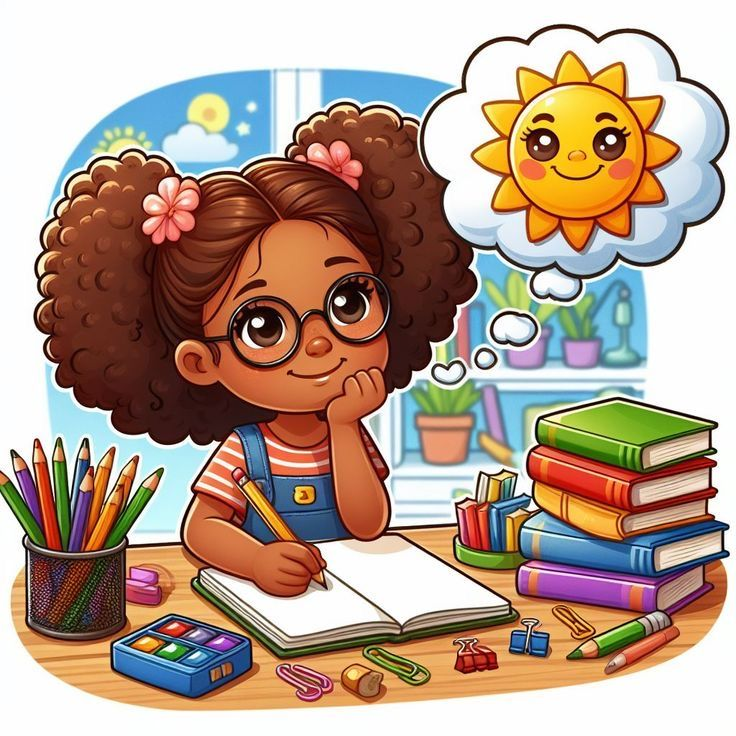

Objetivos de este viaje
En el presente curso se pretenden desarrollar competencias en comprensión lectora a partir de actividades interactivas, y el uso de estrategias de aprendizaje activos y del modelo NEKO. Las diferentes unidades están diseñadas tomando como referencia el proceso de la lectura, abordando de esta manera la comprensión lectora de la lectura literal hasta el análisis crítico e inferencial, de tal forma que los alumnos puedan disponer de elementos clave para mejorar sus capacidades de lectura y lectura crítica.
Alcanzando los siguientes objetivos:
✅ Reconocer la literatura como parte esencial de
nuestra cultura
✅ Mejorar tu capacidad de
comprender y comunicar ideas a partir de lo leído
✅
Formar una mirada crítica y creativa frente a los
textos
Duración del Curso
El curso tendrá una duración de 9 semanas.
Cada unidad tendrá una duración de tres (3)
semanas, es decir, 7 días por actividad. Con una
duración de 1 horas por actividad en la escuela y 2
horas practicas en casa con ayuda del
acudiente.
Competencias del Curso
Las competencias que los estudiantes irán desarrollando a lo largo de las sesiones del curso están vinculadas a la comprensión lectora tal como se manifiesta en los aspectos literal, inferencial y crítico, al uso de herramientas tecnológicas para mejorar la progresión del aprendizaje.
Competencia de comprensión lectora literal:
• Identificar y comprender las ideas principales y los aspectos de detalle de los textos leídos.
• Organizar y resumir de forma clara y coherente la información.
Competencia de comprensión lectora inferencial:
• Establecer inferencias a partir de señales que van implícitas en los textos.
• Analizar el contexto para inferir o enlazar ideas que no se encuentran explícitamente escritas.
Competencia de pensamiento crítico:
• Evaluar la validez y la coherencia de los argumentos expuestos en textos del tipo expositivo y narrativo.
• Desarrollar la capacidad de argumentar y defender opiniones con el apoyo de las pruebas .
Se aplicará una estrategia didáctica a través de un ambiente virtual utilizando el LMS Moodle como apoyo al desarrollo de competencias de lectura crítica en los estudiantes, con el fin de lograr que estos identifiquen los elementos del texto que se encuentran de manera explícita, reconozcan la estructura y sentido global del mismo e infieran información para establecer la relación discursiva o intencionalidad.
Diseño Instruccional
El diseño instruccional de este curso se estructura bajo los principios del modelo NEKO, buscando que los estudiantes desarrollen habilidades lectoras a través de un proceso de aprendizaje activo y profundo.

Las actividades están orientadas a:
Estimular la memoria y el razonamiento cognitivo: Las tareas están diseñadas para activar la memoria a corto y largo plazo, favoreciendo la retención de la información a través de la repetición activa y la organización visual del conocimiento.
Fomentar la interacción activa con el contenido: Se implementan estrategias como el aula invertida, en la que los estudiantes trabajan el contenido de manera autónoma fuera del aula y luego participan en actividades interactivas en línea, como debates y análisis de textos.
Promover la reflexión crítica: A través de actividades de análisis, inferencia y evaluación, se busca que los estudiantes reflexionen sobre el contenido de manera profunda, desarrollando habilidades de pensamiento crítico y argumentativo.
Facilitar el uso de herramientas tecnológicas: El curso integra plataformas tecnológicas como Google Classroom y herramientas para crear mapas conceptuales, que permiten a los estudiantes organizar y visualizar la información, facilitando su comprensión y reflexión.